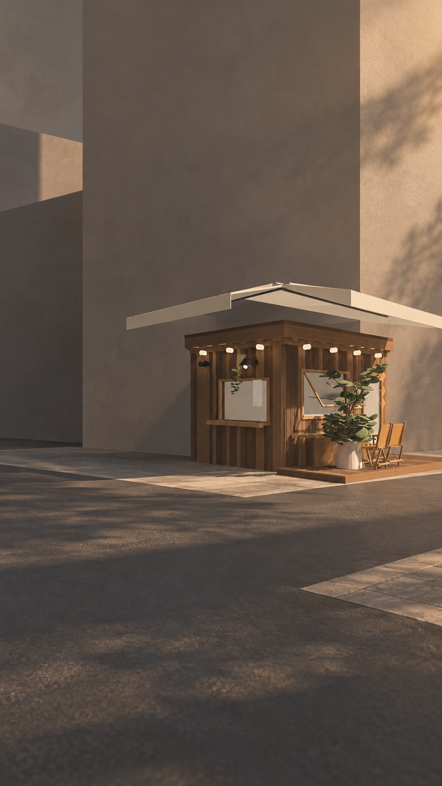
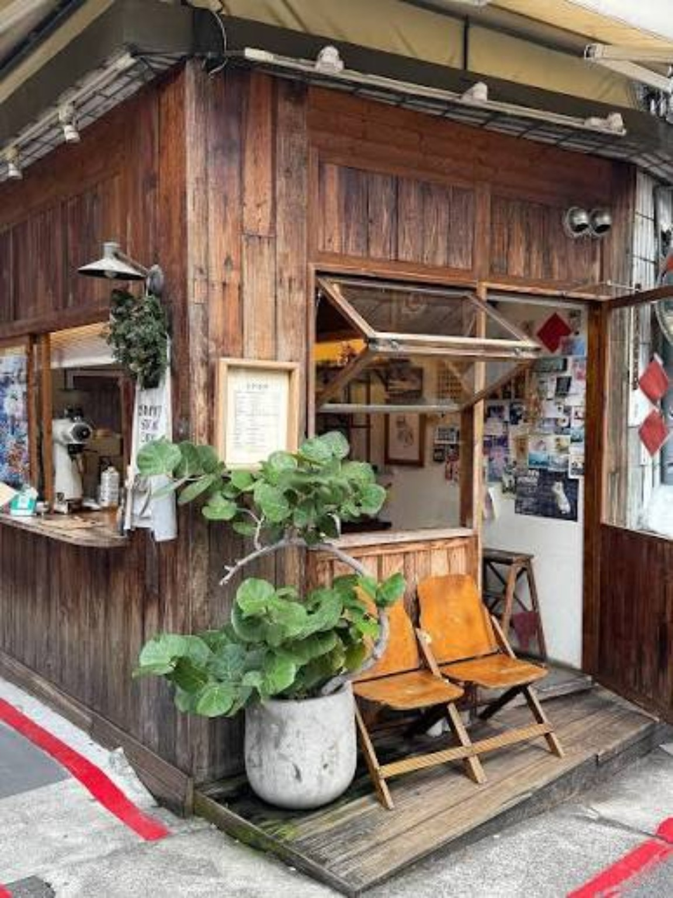
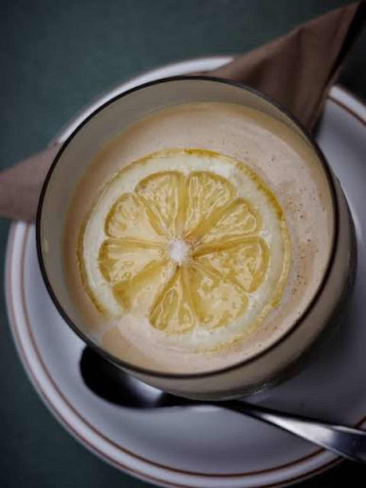
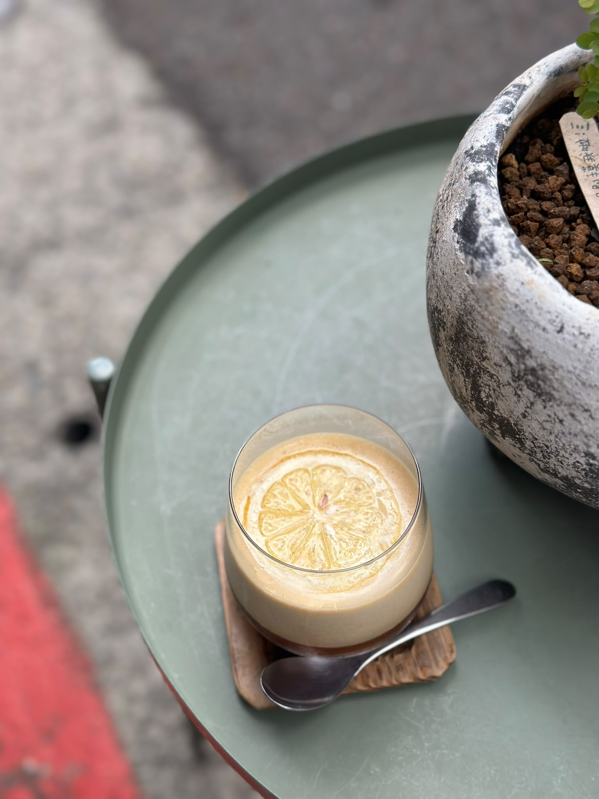

Zhongshan · Taipei
中山，一個街角。
A corner in Zhongshan.
Step 1
冰，一片檸檬。
Ice, one slice of lemon.
Step 2
輕輕倒入咖啡。
Coffee, poured gently.
Lemon · Iced coffee
冰咖啡，一片檸檬。
Iced coffee, one slice of lemon.
中山 · 街角木屋
只賣這一杯。
Just this one cup.